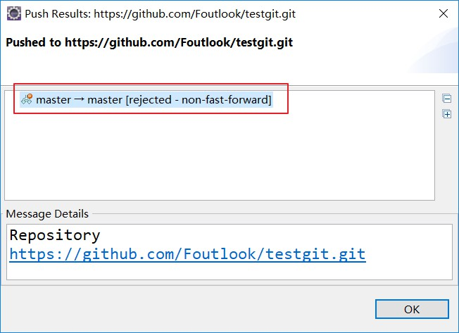
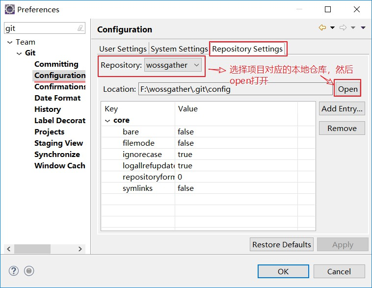
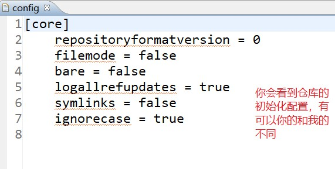
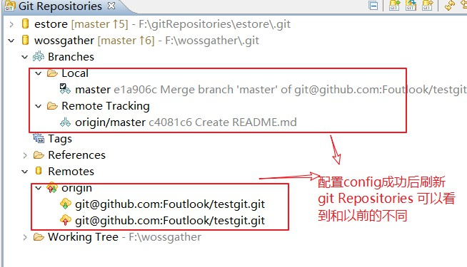
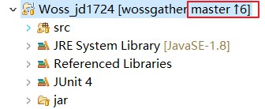
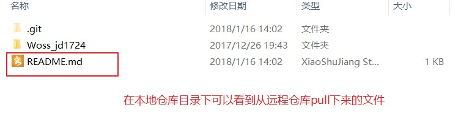
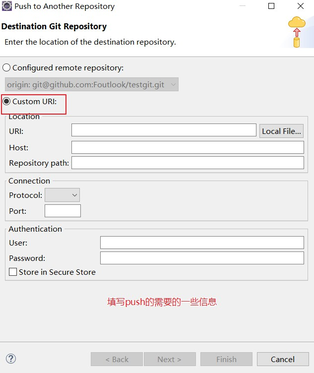

概述
git在eclipse中的配置和远程仓库中关联，这里不再累述，如果有问题可以参考下面博客：这里有详细的说明。
问题
下面主要是我在使用中遇到的问题：rejected - non-fast-forward

我在网上查找原因的时候，并没有一个很完整的文档，总结的都是挺乱的。故我对使用方式给予详细总结，以帮助更多的人。
原因
出现此问题的原因主要是：
我们平时使用eclipse开发的时候，主要是用git的commit和push，如果你的github库没有初始化，第一次push是可以正确提交的，但是当你已经push过一次后，会遇到无法提交到master分支（因为master分支是在服务器已经初始化好了，在服务器上已经存在了一个master分支，你在本地初始化的master分支和服务器的有冲突，并不是一个分支，就会提示rejected - non-fast-forward），如果你此时非要想提交到主分支，必须先要把服务器的初始化的git主分支pull到本地。只有这样才能正确的提交。
解决方案
1，点window—preference–team—git–configuration————-Repository Settings，Repository选择你的项目的本地仓库，然后点右边的open，视图如下：

open后会看到如下的config信息

2，然后在上面的基础上填上如下信息
1 | ... |

3，配置好后选择项目Team–> pull ，会看到项目会变成如下效果：

查看本地仓库目录：

4，push本地项目到远程仓库

过程和第一次push的过程相同，填写信息然后push就可以了。